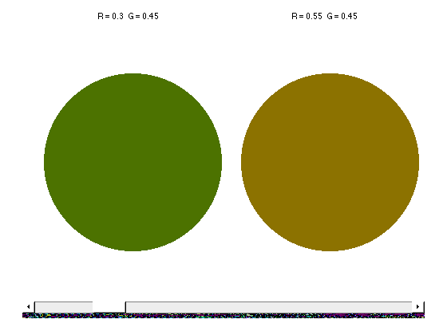

function RGBsliderdemo2(varargin)
f = figure(1);
A = 0.3;
if isempty(varargin{1}) == 1
R = 0.55;
end
if isempty(varargin{2}) == 1
G = 0.45;
end
p = subplot(1,2,1);scatter(0,1,50000,[A G 0],'filled');axis off;
title(['R = ' num2str(A) ' G = ' num2str(G)]);
subplot(1,2,2);scatter(0,1,50000,[R G 0],'filled');axis off;
title(['R = ' num2str(R) ' G = ' num2str(G)]);
h = uicontrol(...
'parent' , f,...
'units' , 'normalized',...
'style' , 'slider',...
'position', [0.05 0.05 0.9 0.05],...
'min' , 0.2,...
'max' , 0.8,...
'value' , A,...
'callback', @sliderCallback);
hLstn = handle.listener(h,'ActionEvent',@sliderCallback);
function sliderCallback(~,~)
delete(p);
p = subplot(1,2,1);scatter(0,1,50000,[get(h,'value') 1-get(h,'value') 0],'filled');axis off;
title(['R = ' num2str(get(h,'value')) ' G = ' num2str(1-get(h,'value'))]);
subplot(1,2,2);scatter(0,1,50000,[R G 0],'filled');axis off;
title(['R = ' num2str(R) ' G = ' num2str(G)]);
end
end
